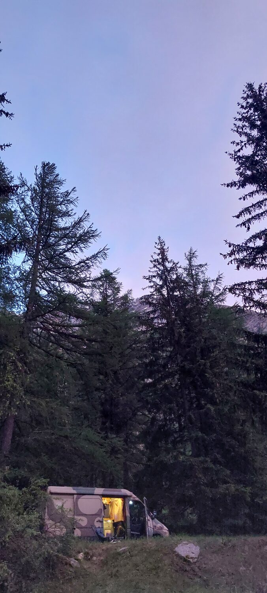

Een avond in de bus
Slapen waar je wilt, ver van de camping
Ik heb met deze bus op de mooiste plekken gestaan, ver van elke camping. 's Ochtends de dieselkachel even hoger, koffie op het gaspitje, en de zonnepanelen laden de accu's alweer op terwijl je ontbijt. Je hoeft niks te reserveren en zit nergens aan vast.
Dit is geen opgepoetste schuurvondst. Het motorblok is gereviseerd en er is de afgelopen jaren ruim € 15.000 aan onderhoud in gegaan, met facturen. Verse APK en nieuwe banden. De remleidingen zijn ook net vervangen.
